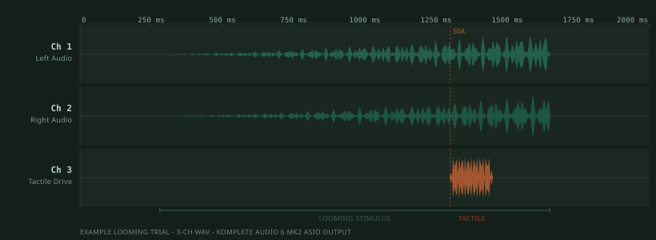

Peripersonal space is the multisensory region immediately surrounding the body within which stimuli are processed differently from those beyond arm's reach. It was first characterized by Rizzolatti et al. (1981a, 1981b) in studies of periarcuate neurons, cells in the ventral premotor cortex and putamen that respond to both tactile stimulation of the body surface and nearby external stimuli, and has since been linked to defensive behavior, tool use, and bodily self-awareness.
The standard behavioral approach for measuring peripersonal space in humans is the audio-tactile interaction task. In the canonical version reported by Canzoneri et al. (2012), participants respond to body-surface tactile stimuli while auditory stimuli approach from varying distances; tactile response times are faster when the sound is near the body. This distance-dependent facilitation profile serves as a behavioral index of the spatial boundary of an individual's peripersonal space representation. Despite the paradigm's widespread adoption, standardized implementations are lacking and task parameters are rarely shared across labs.
Project
The Toolkit
The Peripersonal Space Toolkit is a local-first research platform for designing and running audio-tactile peripersonal space experiments. Researchers can build a study from scratch by specifying trajectory, source material, timing, and tactile onset asynchronies through a graphical interface, or they can load published parameter sets to reproduce the design decisions reported in existing studies. The toolkit does not redistribute the stimuli from those studies, since these are rarely made available by authors, but it makes the decision parameters themselves explicit, version-controlled, and shareable across labs. All stimulus generation, experiment preparation, and data collection run locally on the lab PC through a local Python backend and a native experiment runner; the browser-based dashboard is a configuration interface only and communicates with the local backend at 127.0.0.1.
Software Flow
Architecture
The toolkit is organized as a layered system in which the browser dashboard collects researcher decisions and passes them to a local Python backend that does all computational work. The browser never generates stimuli or controls timing directly. All rendering, file creation, and experiment execution happen on the lab PC, keeping participant data local and timing-sensitive work entirely out of the browser. The three-channel output design, enabled by the Komplete Audio 6 MK2 ASIO interface, carries left audio, right audio, and the tactile drive signal as a single synchronized stream whose inter-channel timing is governed by one hardware sample clock.
Browser
UI LayerDashboard
Researcher-facing interface for study profile, trajectory, timing, SOA, and trial-structure decisions. Hosted on GitHub Pages and connected to the local backend via localhost.
Validates researcher decisions, writes project folders and manifests, and calls render and session preparation routines. Runs entirely on the lab PC and is not accessible externally.
Head-related transfer functions stored in SOFA format provide the binaural reference used to spatialize looming audio along the researcher-defined trajectory.
Channels 1 and 2 carry left and right spatial audio. Manifests record trajectory samples, render config, file hashes, and quality-control summaries alongside each WAV.
Experiment AssemblyTrial and Session Package
SOA schedules, block CSVs, and participant block order prepared alongside the WAVs and handed off to the experiment runner.
Runtime
Experiment RunnerPPSExperimentRunner.exe
Native Windows application that opens the prepared session package and plays the three-channel ASIO stream to the lab hardware. Owns all timing-sensitive playback and response recording entirely outside the browser.

Fig.
Three-channel WAV stream routed to the Komplete Audio 6 MK2. Ch 1 and Ch 2 carry binaural left and right audio with amplitude growing as the source approaches. Ch 3 carries the tactile drive signal, onset offset by the SOA schedule. All channels share one hardware sample clock.
Hardware
Audio InterfaceKomplete Audio 6 MK2
ASIO multichannel interface clocking all three output channels from one synchronized sample clock. Operated as a single device rather than separate Windows endpoints.
Binaural left and right auditory streams delivered to the participant. The looming sound approaches along the researcher-defined spatial trajectory.
Channel 3Woojer Strap 4
Wired analog tactile transducer receiving the audio-encoded tactile cue on output 3. The tactile onset is a direct function of the SOA schedule and shares the same hardware clock as the auditory channels.
Stimulus Model
SOFA/FABIAN and Spatialized Looming Stimuli
Binaural spatialization uses head-related transfer functions stored in the SOFA format, the Spatially Oriented Format for Acoustics, an AES-standardized container for spatial acoustic measurements. The bundled FABIAN/TU Berlin HRIR dataset serves as the binaural rendering reference. Researchers define source trajectory, looming duration, start and end distances, azimuth, and timing parameters through the interface, and the local backend converts these into binaural WAV files in which channels 1 and 2 carry the left and right auditory streams. Tactile timing is handled separately through a stimulus onset asynchrony schedule that drives the third analog output channel, and all rendering decisions are captured in manifests that record trajectory samples, tactile events, file hashes, and quality-control summaries for post-hoc auditability.
SOFA Standard
SOFA is an AES-standardized format for spatial acoustic data, including HRTFs and binaural room impulse responses.
The native binaural rendering path traces to the 3D Tune-In Toolkit, referred to as 3DTI, an open-source C++ spatial audio library originally published by Cuevas-Rodriguez and colleagues in PLOS ONE in 2019. The 3DTI authors have since migrated the core algorithms to the Binaural Rendering Toolbox, the BRT Library, which is now their recommended repository for ongoing development. PPS Toolkit adopts BRT as the primary forward-facing renderer while preserving 3DTI-compatible configurations and pinned source snapshots to support reproducibility of any work conducted under the earlier rendering path.
Citable renderer references:
González-Toledo, D., Molina-Tanco, L., Cuevas-Rodríguez, M., Majdak, P., & Reyes-Lecuona, A. (2023). The Binaural Rendering Toolbox. A Virtual Laboratory for Reproducible Research in Psychoacoustics. Proceedings of the 10th Convention of the European Acoustics Association. https://dael.euracoustics.org/confs/landing_pages/fa2023/001042.html
Cuevas-Rodríguez, M., Picinali, L., González-Toledo, D., Garre, C., de la Rubia-Cuestas, E., Molina-Tanco, L., & Reyes-Lecuona, A. (2019). 3D Tune-In Toolkit: An open-source library for real-time binaural spatialisation. PLOS ONE, 14(3), e0211899. https://doi.org/10.1371/journal.pone.0211899
3DTI/BRT is a rendering dependency and provenance layer. It is not a browser dependency, participant timing engine, or place to store local experiment data.
Lab Route
Hardware Specifications and Latency Evidence
The validated lab route runs on Windows and delivers auditory and tactile stimuli through a single synchronized multichannel ASIO output stream using the Native Instruments Komplete Audio 6 MK2 interface. Channels 1 and 2 route binaural left and right audio to participant headphones while channel 3 drives a Woojer Strap 4 connected as a wired analog load, removing the timing variability introduced by Bluetooth. The tactile signal is not a separate conversion path but a conventional audio waveform written to output 3 and routed into the Woojer's wired analog auxiliary input, whose transducer converts low-frequency signal energy into vibrotactile stimulation. Encoding the tactile cue as an audio channel keeps its onset timing under exactly the same software and hardware control as the auditory channels, making the stimulus onset asynchrony between sound and touch a direct function of the SOA schedule.
Latency was measured using a direct electrical loopback in which the three output channels were patched back into the Komplete Audio 6 MK2's own analog inputs via TRS cables, and a calibration pulse train was played while the return signal was simultaneously recorded. Comparing transmitted and received pulse timing gives the round-trip delay per channel. The physical-minus-digital latency is 33.462 ± 0.013 ms across 20 recovered pulses, representing the time between when the software schedules a sample and when that signal appears at the physical output. All 20 response marker pulses were recovered. The critical finding for audio-tactile research is the inter-channel skew: the left and right audio channels are synchronized to within 0.023 ms of each other, and the tactile drive channel deviates from the audio channels by only 0.011 ms. These sub-millisecond differences are possible because the Komplete Audio 6 MK2, operated through its ASIO driver as a single multichannel device, clocks all three outputs from the same sample clock and renders them within the same output buffer; this result cannot be replicated by routing stimuli through separate Windows stereo endpoints. The full loopback protocol is documented in the latency validation report.
Design Workflow
How The Experiment Designer Works
The Experiment Designer is a linear seven-segment workflow in which each segment owns a distinct decision layer and produces its own set of local files and manifests. Beginning with study or profile selection at Segment 0, the researcher progresses through defining auditory ingredients such as looming trajectories and source materials at Segment 1, assembling those into trial sequences at Segment 2, adding tactile timing via SOA schedules with baseline and catch-trial logic at Segment 3, setting repetition counts to build a trial-pool CSV at Segment 4, generating and inspecting block CSVs at Segment 5, and finally preparing participant block orders for handoff to the native runner at Segment 6. This sequential structure ensures every file produced at each stage is traceable to the decisions that generated it, supporting design transparency and replication.
0 PreloadChoose a published profile or custom project.
1 StimuliCreate or import reusable auditory ingredients.
2 SequenceArrange ingredients into within-trial rows and variants.
The Experiment Runner is a native Windows application, PPSExperimentRunner.exe, launched from the Segment 6 setup package and entirely separate from the browser dashboard. It is responsible for all timing-sensitive work during data collection, opening the prepared session package, playing the three-channel ASIO stream to the lab hardware, and recording participant responses and event markers. All playback timing is handled natively to avoid the latency variability inherent in browser JavaScript execution. Session output folders contain event CSVs, XDF and marker mirrors for Lab Streaming Layer integrations, trigger dictionaries, timing quality-control reports, and analysis-ready trial rows.
The toolkit can currently recreate six study profiles whose reported parameters pass the Segment 0–4 profile gate and can be materialized for native runner handoff, drawn from the five publications below.
Matsuda, Y., Sugimoto, M., Inami, M., & Kitazaki, M. (2021). Peripersonal space in the front, rear, left and right directions for audio-tactile multisensory integration. Scientific Reports, 11, Article 11303. https://doi.org/10.1038/s41598-021-90784-5
Lamia, P., Shabani, N., & Candidi, M. (2026). Somatotopy-independent reduction of audio-tactile intersensory facilitation for looming sounds within the peripersonal space during arm movements execution. Scientific Reports, 16, Article 7133. https://doi.org/10.1038/s41598-026-36796-5
Pfeiffer, C., Noel, J. P., Serino, A., & Blanke, O. (2018). Vestibular modulation of peripersonal space boundaries. European Journal of Neuroscience, 47(7), 800–811. https://doi.org/10.1111/ejn.13872
Serino, A., Noel, J. P., Galli, G., Canzoneri, E., Marmaroli, P., Lissek, H., & Blanke, O. (2015). Body part-centered and full body-centered peripersonal space representations. Scientific Reports, 5, Article 18603. https://doi.org/10.1038/srep18603
Public Release
MIT License Disclaimer
PPS Toolkit is released under the MIT License. Permission is granted to use, copy, modify, merge, publish, distribute, sublicense, and sell copies of the software, provided the copyright notice and permission notice stay with the software. The software is provided as is, without warranty of any kind, including implied warranties of merchantability, fitness for a particular purpose, or noninfringement. The authors and copyright holders are not liable for claims, damages, or other liability arising from use of the toolkit.
License Scope
The MIT License covers the toolkit code and included project materials. It does not grant rights to redistribute third-party assets, vendor software, or external datasets.
Local Data
Generated designs, sessions, participant outputs, and validation artifacts stay local under ignored folders such as local_data/ and artifacts/.
No Warranty
Researchers are responsible for validating timing, hardware routing, ethics approvals, and local data-handling procedures before using the toolkit for data collection.